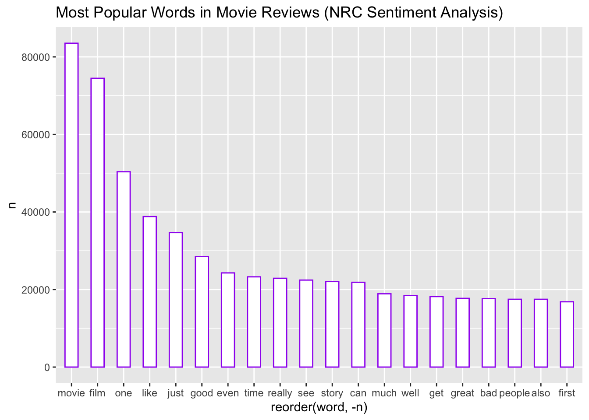
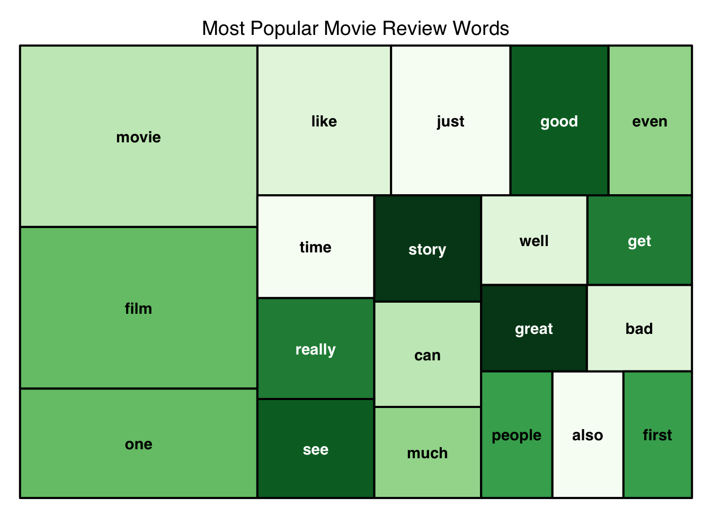
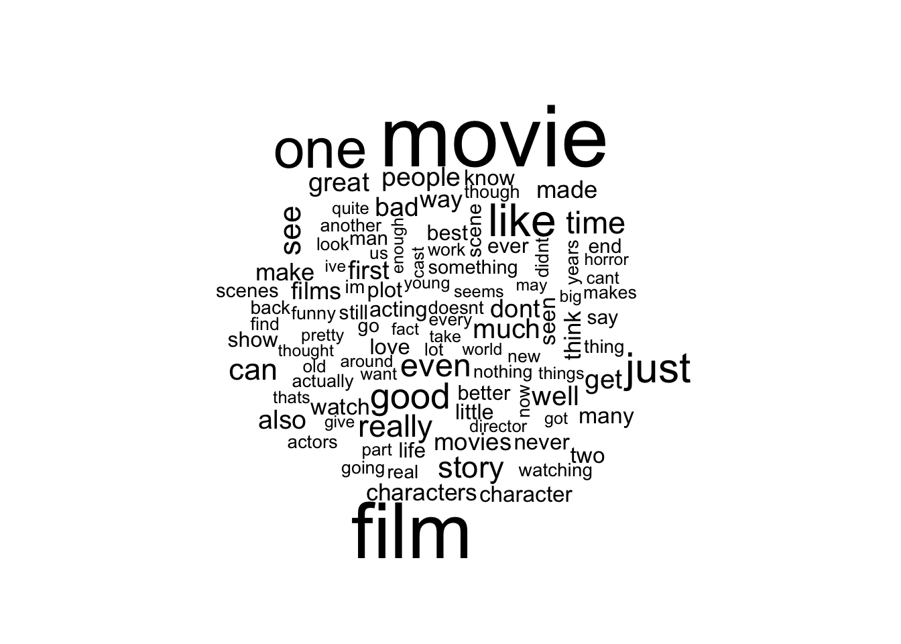
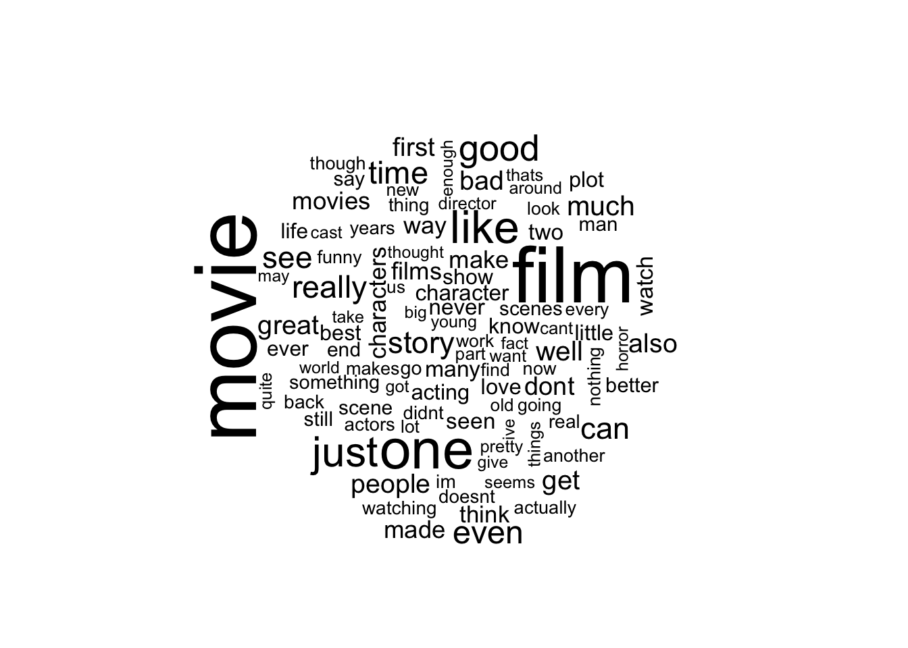

By Vardan Martirosyan, Raymond Lee, Piero Trujillo, Shannon Rumsey, Yutong Wang
Introduction
Sentiment Analysis and Lexicons
Sentiment analysis (also called opinion mining) is the process of analyzing text to understand its sentiment. This can be useful in evaluating the sentiment of product reviews, social media posts, and more without having to read them ourselves. One of the most common ways to accomplish this is to consider a text as the sum of the sentiments of its individual words. This is similar to how humans use their understanding of the emotional intent of words to infer whether a text is positive or negative.
There exist various lexicons (or dictionaries) that are used to evaluate the emotion of a text and label them as positive, negative, or even neutral. They usually analyze text as unigrams. These lexicons contain many English words and their associated scores or labels for positive/negative sentiment or for emotions such as happiness, anger, etc. We will utilize four lexicons: AFINN, Bing, NRC, and Loughran.
AFINN
Assigns one single word with a numeric value between -5 and 5. Values in the negative range are words with a negative connotation. Those in the positive range are words with a positive connotation. The numeric values also have a degree, for example, positive ranges from 1 to 5, 5 being most positive and 1 being least positive.
Similar to Bing in that it assigns one single word into a category but instead of just sentiments “negative” and “positive”, there is also an emotions related category that has “anger”, “anticipation”, “disgust”, “fear”, “joy”, “sadness”, “surprise”, and “trust”.
nrc <-get_sentiments("nrc")nrc
# A tibble: 13,872 × 2
word sentiment
<chr> <chr>
1 abacus trust
2 abandon fear
3 abandon negative
4 abandon sadness
5 abandoned anger
6 abandoned fear
7 abandoned negative
8 abandoned sadness
9 abandonment anger
10 abandonment fear
# … with 13,862 more rows
Loughran
Used primarily for financial terms. It takes into account financial words that may appear to be a certain sentiment in other libraries but in a financial context, may have a different meaning.
In this vignette, we will be exploring the IMDB-raw dataset file. This dataset comprises of two columns, “review” and “sentiment”. The “review” column is made up of reviews left on movies on the IMDB platform in the form of text data. The “sentiment” column is a binary score “positive” or “negative” that were labeled by hand. If a review is labeled as “negative” then it what is known as a “bad review” or a sub-par experience. If a review is labeled as “positive” then the reviewer had an enjoyable experience.
For this experiment, we will be breaking apart the reviews into single words. From here, the words are associated with one score from each of the four libraries (AFINN, Bing, NRC, Loughran). Taking the most common sentiment, or, in the case of AFINN - the average value, we will obtain four overall average “sentiments” that summarize the reviews. One other predictor added is the length of the reviews as this may have had an impact in the hand-picked scores. In a sense, we are attempting to simulate the hand-picked sentiments.
The four sentiments found will be used in a logistic model to predict how accurately they were at labeling the reviews. The predictions will be compared to the hand-picked values.
# loading in the dataset# make sure to set working directory to folder containing vignettedataset <-read.csv("data/IMDB-raw.csv")
Cleaning the Dataset
We then want to clean the dataset so that we can build a model with it. We first call two cleaning functions that we will use.
### Functions for Text Cleaning #### Creating several wrapper functions to clean up the data.# This first function removes the "<br />" terms from the text, as these are not words. It also sets everything to lower case so that we have a unified format to work with. clean_fn <-function(.text){str_replace_all(.text, "<br />", "") %>%tolower()}# This function removes all punctuation. clean_fn2 <-function(.text){str_remove_all(.text, '[[:punct:]]') %>%tolower()}
Having defined these functions, we can then clean our dataset as follows:
# Applying this function to all of the reviews in our dataset.dataset_clean <- dataset %>%mutate(review =clean_fn(review)) %>%mutate(review =clean_fn2(review))
Finally, we can add an ‘id’ column to our dataset, and write the cleaned dataset to our ‘data’ folder for easy use later on.
# Adding a column with id's for each observation.dataset_clean <- tibble::rowid_to_column(dataset_clean, ".id")#writing the data.write.csv(dataset_clean, file ="data/IMDB-clean.csv")
This ends the cleaning of our dataset, and we now have a dataset ready for use!
Creation of Predictors
In this section, we will add five predictors to the dataset, with one predictor being the length of the review, and the other four predictors being the sentiments of each review that will be obtained from the lexicons we’ve mentioned above. We start by adding the length as follows:
#Adding a column with the lengths of each review for each observation.dataset_clean <- dataset_clean %>%mutate(length =nchar(dataset$review, type ="chars", allowNA =FALSE, keepNA =NA))
Then, we will compute the ‘afinn’ sentiment for each review and put it into the dataset as follows.
# matches words in reviews with words in afinn library# provides an afinn score for each individual wordafinn_tokens <- dataset_clean %>%unnest_tokens(word, review) %>%anti_join(get_stopwords()) %>%full_join(get_sentiments("afinn"))#Assign a score of 0 for the words that are not included by the lexiconafinn_tokens$value[is.na(afinn_tokens$value)] <-0# calculates the mean of afinn score by idafinn_scores <- afinn_tokens %>%group_by(.id) %>%summarize(afinn_score =mean(value[value!=0]))#Assign a score of 0 for the reviews that contains no word that are included by the lexiconafinn_scores$afinn_score[is.na(afinn_scores$afinn_score)] <-0# merge with main datasetdataset_clean <-merge(dataset_clean, afinn_scores, by =".id")
Next, we will compute the ‘bing’ sentiment for each review and put it into the dataset as follows.
# Uses the Bing library to categorize words into positive and negative categories# Our Bing score is based on whether there are more positive or negative words in each observationbing_tokens <- dataset_clean %>%unnest_tokens(word, review) %>%anti_join(get_stopwords()) %>%full_join(get_sentiments("bing"))#Assign neutral for all the words that are not a part of the lexicon`%notin%`<-Negate(`%in%`)bing_tokens$sentiment[bing_tokens$word %notin% bing$word] <-"neutral"# Calculating Bing Sentiment# Joining by id and deciding sentiment based on the higher amount of positive or negative scoresbing_scores <- bing_tokens %>%group_by(.id) %>%summarize(bing_score =max(sentiment[sentiment!="neutral"]))#Assign neutral for the reviews that includes no words that are in the lexiconbing_scores$bing_score[is.na(bing_scores$bing_score)] <-"neutral"# Merge with main datasetdataset_clean <-merge(dataset_clean, bing_scores, by =".id")
Continuing onward, we will compute the ‘Loughran’ sentiment for each review and put it into the dataset as follows.
### Predicting Sentiment with Loughranloughran_tokens <- dataset_clean %>%unnest_tokens(word, review) %>%anti_join(get_stopwords()) %>%full_join(get_sentiments("loughran"))#Assign neutral for all the words that are not a part of the lexiconloughran_tokens$sentiment[loughran_tokens$word %notin% loughran$word] <-"neutral"# Joining by id and deciding sentiment based on the higher amount of positive or negative scoresloughran_scores <- loughran_tokens %>%group_by(.id) %>%summarize(loughran_score =max(sentiment[sentiment!="neutral"]))#Assign neutral for the reviews that includes no words that are in the lexiconloughran_scores$loughran_score[is.na(loughran_scores$loughran_score)] <-"neutral"dataset_clean <-merge(dataset_clean, loughran_scores, by =".id")
Finally, we will compute the ‘NRC’ sentiment for each review and put it into the dataset as follows.
### Predicting sentiment with NRCnrc_tokens <- dataset_clean %>%unnest_tokens(word, review) %>%anti_join(get_stopwords()) %>%full_join(get_sentiments("nrc"))#Assign neutral for all the words that are not a part of the lexiconnrc_tokens$sentiment[nrc_tokens$word %notin% nrc$word] <-"neutral"# Joining by id and deciding sentiment based on the higher amount of positive or negative scoresnrc_scores <- nrc_tokens %>%group_by(.id) %>%summarize(nrc_score =max(sentiment))#Assign neutral for the reviews that includes no words that are in the lexiconnrc_scores$nrc_score[is.na(nrc_scores$nrc_score)] <-"neutral"dataset_clean <-merge(dataset_clean, nrc_scores, by =".id")
This concludes the construction of our cleaned dataset, as we now have all of the predictors that we want.
Exploratory Data Analysis
In this section, we will explore our IMDB Review dataset with a plethora of graphs and other visualizations.
Corrplot
library('corrplot')length <- dataset_clean$lengthafinn_score <- dataset_clean$afinn_scorecorrplot(cor(data.frame(length, afinn_score)), type ="lower", method ="shade")
In this correlation plot, we show how the length of each review affects its AFINN score. Although our variables have a slight negative correlation with each other, review length does not seem to strongly affect AFINN score.
Distribution of Sentiment Scores Among Reviews
We will use barplots to show how the distribution of positive and negative scores between different sentiment analysis models varies. We will plot the distributions of our Bing and Loughran scores against the actual split of the data to see how well we were able to classify our movie reviews.
To do so, we must first count the amount of positive and negative scores for each sentiment analysis model. We can do this by grouping each dataframe by their sentiment score column and then counting each group.
Looking at our bar plots, we can see that the real split between our sentiment score values is surprisingly 50.07% positive and 49.99% negative. At first, this split seemed too good to be true but after checking with the publisher of the original dataset we confirmed that the data is in fact split about evenly. This graph also shows us that our NRC and Bing sentiment analysis models were able to classify reviews with perfect accuracy. You wouldn’t be able to tell the differences in accuracy unless you looked at their real values in their accuracy tables which show a perfect classification rate.
Distribution of Number of Words Per Review
In this graph, we explore how the length of movie reviews is distributed in our dataset. We counted every movie review’s length by adjusting our stat variable to count.
word_count_bar <-ggplot(data=dataset_clean, aes(x=length)) +geom_bar(stat='count', color="purple", fill="white", width=2) +ggtitle("Distribution of Number of Words Per Review") word_count_bar
Our graph shows us that the majority of our movie reviews have an average word length under 1500.
Most Common Words In a Sentiment Analysis Model
We look at our NRC sentiment analysis dataframe to find the most common words in our movie reviews that are also found in our NRC library.
To do so, we must first count every time a word appeared in a movie review for each sentiment analysis model.
Now we will subset our dataset to only use the top 20 most popular words.
first_20 <- word_counts[1:20,]first_20_bar <-ggplot(data=first_20, aes(x=reorder(word,-n), y=n)) +geom_bar(stat='identity', color="purple", fill="white", width=0.5) +ggtitle("Most Popular Words in Movie Reviews (NRC Sentiment Analysis)") first_20_bar

Our plot shows us that Good and Bad are by far the most common words found in our movie reviews that were recognized by the NRC library. Good and Bad are also likely to be best indicators of whether a review is positive or negative.
Tree Map of Most Popular Movie Review Words
We can also use the ‘treemap’ package to visualize word popularity by size.
library(treemap)treemap(first_20, # dataframeindex=("word"), # categorical columnvSize ="n", # numerical columntype="index", # Type sets the organization and color scheme of your treemappalette ="Greens", # color palette from RColorBrewer preset. You can also make a vector of your own color values.title="Most Popular Movie Review Words", # titlefontsize.title =14# font size)

Word Clouds
Using each sentiment analysis model dataframe, we can count every instance of a word and create word clouds of the most popular words recognized from every model’s corresponding library.
Bing Word Cloud
library(wordcloud)bing_tokens %>%count(word) %>%with(wordcloud(word, n, max.words =100))

NRC Word Cloud
nrc_tokens %>%count(word) %>%with(wordcloud(word, n, max.words =100))

Loughran Word Cloud
loughran_tokens %>%count(word) %>%with(wordcloud(word, n, max.words =100))
AFINN Word Cloud
afinn_tokens %>%count(word) %>%with(wordcloud(word, n, max.words =100))
We can also classify word clouds into positive and negative sentiments by sorting every word by their sentiment value and using acast() which casts our dataframe into an array of count values “n”. We then call comparison.cloud() to make a word cloud after comparing sentiment score frequencies. After, we can apply our favorite hexadecimal color values to represent positive and negative words.
Building and Testing the Logistic Regression Model
Having constructed our dataset, we can now build the logistic regression model, and test it’s performance. First, let us set the seed, turn the ‘sentinment’ variable (the one we are trying to predict) into a factor (since it’s currently a character vector), and split the data.
#Building the Logistic Regression Model#Setting the seed.set.seed(69)#turning sentiment into a factor so that we can actually predict it.dataset_clean$sentiment <-as.factor(dataset_clean$sentiment)#Reordering the factor so that 'Yes' is the first factor.dataset_clean$sentiment <-relevel(dataset_clean$sentiment, 'positive')#splitting the data.dataset_split <-initial_split(dataset_clean, prop =0.70,strata = sentiment)#splitting the data into a training set and a testing set.dataset_train <-training(dataset_split)dataset_test <-testing(dataset_split)
Then, we can create the recipe using all of the predictors we added to our dataset above. Additionally, we will create the workflow and regression object at this time for our logistic regressoin model.
#creating the recipe.dataset_recipe <-recipe(sentiment ~ length + afinn_score + bing_score+ loughran_score + nrc_score, data = dataset_train)#creating the logistic regression object.log_reg <-logistic_reg() %>%set_engine("glm") %>%set_mode("classification")#creating the workflow.log_wkflow <-workflow() %>%add_model(log_reg) %>%add_recipe(dataset_recipe)
Finally, we can fit the model on the training data, then evaluate the performance (accuracy) of the model on the testing data as follows. We print out the accuracy at the end.
#fitting the workflow with the object.log_fit <-fit(log_wkflow, dataset_train)#storing the accuracy of the logistic model on the testing data.log_reg_acc <-augment(log_fit, new_data = dataset_test) %>%accuracy(truth = sentiment, estimate = .pred_class)
We note that with our predictors, we managed to attain a 100 percent accuracy with the model, which seems to indicate that there might be an issue with the model fit. Indeed, we note that when we ran the code, we were thrown a warning, which stated that the model fit was rank deficit. Changing the recipe in the code above reveals that we are thrown this error when ‘loughran_score’ is combined with at least one of the other score predictors. Excluding this predictor, we note that any combination of the other predictors always returns a 100 percent accuracy on the testing set, with the exception of the three following recipe combinations: ‘sentiment ~ length’, ‘sentiment ~ length + affin_score’, and ‘sentiment ~ afinn_score’. (These recipe combinations yield accuracies of 50, 75, and 75 percent respectively on the testing dataset).
These results seem to indicate that the predictors from the sentiment engines we obtained are very good predictors for predicting the sentiments of movie reviews. It seems that all of them perform equivalently well, with the exception of ‘afinn’, which by our discussion above does not perform as well.
In terms of problems with our sentiment analysis and what we could potentially fix them, there are several things that are worth mentioning. First, even though lexicons attempt to cover all formats of certain words, such as how the afinn lexicon included “abandon”, “abandoned”, and “abandons” at the same time, they fail to distinguish the different formats of some words that are not always used as verbs. For instance, in the afinn lexicon, “lack” is included but “lacks” is not. Similarly, slang, abbreviations, and misspellings will also not be evaluated correctly, which can lead to less accurate sentiment assignments for some reviews.
To fix this, we can attempt the approach of approximate string comparisons, so that we can rate “lacks” the same way we rate “lack” and “terible” the same way we rate “terrible”.
Another problem that we cannot ignore when using lexicon is the context of the reviews. For example, the word “scary” is rated negative in all the lexicons that contains it, and while it is usually a negative word, when the review is about a horror movie, it can actually be a good thing.
What we can do to solve this problem is to include a new variable that includes certain words like names of genres in the lexicons, which we will call “multiplier”. For instance, we can make “horror” a multiplier with a value of -1, and when “horror” is present, things like “scary” or “scream” are multiplied by this value, which will turn them into positive sentiments.